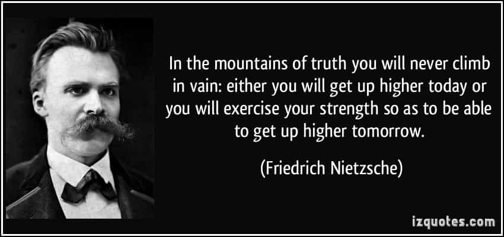
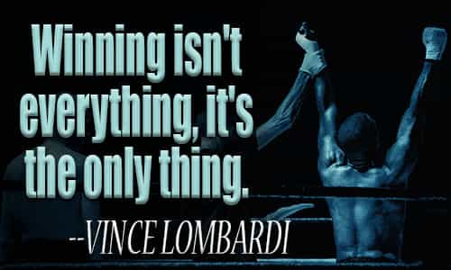

Dawn Pine (aka TheMaleBrain) is an Israeli 40+ divorced father of 2, former casualty of the blue-pill. Since he has taken the red pill his hobbies are: working out, writing, mentoring, harem management and self improvement.


SJWs are one of our favorite subjects here on ROK. If you care to do a site search, you end up with 28 pages of articles that include that term. We discuss their tactics (examples 1 and 2), how to mitigate them (example 1 and 2) and of course we all agree that SJW Always Lie. We have been analyzing this phenomena for quite a while now, but it seems that it is not that new.
I recently read Nietzsche’s “Thus Spoke Zarathustra” (“Also sprach Zarathustra” in German). It seems that one of our favorite philosophers had a keen eye and identified them as far back as 1883. We have already discussed 19th century feminism, but I’d like to review what Nietzsche wrote about them.

According to popular belief in the 19th century, those spiders were lethal. The only way to avoid mortality was to dance like a mad man. I’m not kidding. Today we know that those spiders are not lethal, and can be pets and long term companions (the females live up to 30 years, while the males only 7. That’s misandry!).
That is one big tarantula. Source: Youtube
BEHOLD, THIS is the tarantula’s den! Would you see the tarantula itself? Here hangs its web: touch this, so that it may tremble.
There comes the tarantula willingly: Welcome, tarantula! Black on your back is your triangle and symbol; and I know also what is in your soul.
Revenge is in your soul: wherever you bite, there arises black scab; with revenge, your poison makes the soul giddy!
Thus do I speak to you in parable, you who make the soul giddy, you preachers of equality! Tarantulas are you to me, and secretly revengeful ones!
In these lines he identifies core aspects of the SJW. The first is that you just need to touch “their web” (read – come to their consciousness with something that strikes a chord within them) to see them come out. The second is that they will come willingly and have their special “symbol” (read – clothes that identify them as such) and the third is that they do not care about justice – they care about revenge.
“Therefore do I tear at your web, that your rage may lure you out of your den of lies, and that your revenge may leap forth from behind your word “justice.”
Because, for man to be redeemed from revenge – that is for me the bridge to the highest hope, and a rainbow after long storms.
Otherwise, however, would the tarantulas have it. “Let it be very justice for the world to become full of the storms of our vengeance” – thus do they talk to one another.
“Vengeance will we use, and insult, against all who are not like us” – thus do the tarantula-hearts pledge themselves.
“And ‘Will to Equality’ – that itself shall henceforth be the name of virtue; and against all that has power will we raise an outcry!”
So simple, so elegant. You want to tackle SJW, you tear down their web of lies. You want them to lose their wits so everyone can see them for what they are. SJWs want “justice” no matter what the price is, and they’ll insult their way to that goal. Equalism is their religion, this is how they will signal their virtue. I don’t know about you, but I was shocked to see how within a few sentences the core of SJW is revealed. And that coming from a distance of 130 years ago.
One way to fight SJWs
“You preachers of equality, the tyrant-frenzy of impotence cries thus in you for “equality”: your most secret tyrant-longings disguise themselves thus in virtue-words!
…
Their jealousy leads them also into thinkers’ paths; and this is the sign of their jealousy – they always go too far: so that their fatigue has at last to go to sleep on the snow.”
Equality has its place in the world. To Nietzsche the will to equality seems like the will to be slaves or to be ruled by a tyrant. We have seen before that SJW are actually on the hunt for authoritarian style of state. They just hide it in nice words. Nietzsche identifies it as linking to the core emotion of jealousy. You want equality because you are jealous. That emotion leads you too far, and in some cases to make your country a terrorist fertile ground or have much higher rape cases.
“That they speak in favour of life, though they sit in their den, these poison-spiders, and withdrawn from life – is because they would thereby do injury.
To those would they thereby do injury who have power at present: for with those the preaching of death is still most at home.
Were it otherwise, then would the tarantulas teach otherwise: and they themselves were formerly the best world-maligners and heretic-burners.”
“Power is bad, unless it is on my side”
SJW would rather withdraw from life (read – live in their fantasy world) and harm other people. They will go after those who currently have power, because they want that power distributed “fairly”. For Nietzsche – “life itself is will to power”, so by wanting to lose power you choose death over life. We can surely identify with that. SJWs were those people who would slander the world as it is, and burn those who think differently.
“Inventors of figures and phantoms shall they be in their hostilities; and with those figures and phantoms shall they yet fight with each other the supreme fight!
Good and evil, and rich and poor, and high and low, and all names of values: weapons shall they be, and sounding signs, that life must again and again surpass itself! ”
SJW will use their emotion of injustice to create phantoms, and they will fight with their proclaimed enemies until someone wins. SJW will use virtue as their weapon, but they fail to understand that by using them, they are actually stating that life is a struggle. This means that maybe, just maybe, might makes right. Otherwise, why wouldn’t they win without dirty tactics?
THE PHANTOM himself
Nietzsche’s book is not an easy one to read. The book’s second title is “A Book for All and None”. And with good reason. Another philosopher, Heidegger, claimed in 1953 that people do not understand Nietzche’s book and just take bits out of it. Ironically, this is what I’ve done here.
Nietzsche’s advice on letting enemies struggle among themselves and against their enemies seems like a kind of test to see who wins. For him it does not matter who wins the fight, as long as someone comes on top. As someone who understands an enemy’s true nature, he is taking a back seat to watch if our civilization will be overrun by the tarantulas. This brings us to some of the best critic I read about him, with a hat tip to our own William Adams.

When I read this part of the book, I immediately recognized the tarantulas. That analogy was not only brilliant but captures core essence of the SJWs. However, his call to learn from them and to fight each other does not resonate well. It is true that understanding the full extent of Nietzche is probably an effort above this writer’s ability with regard to the article.
Read Next: Why Leftists Are Stunned At The Wise Words Of Friedrich Nietzsche